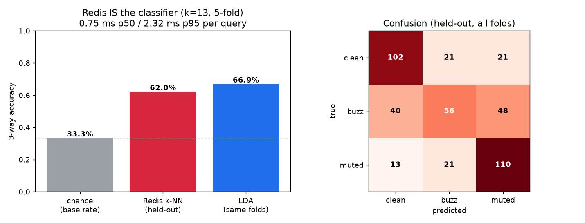
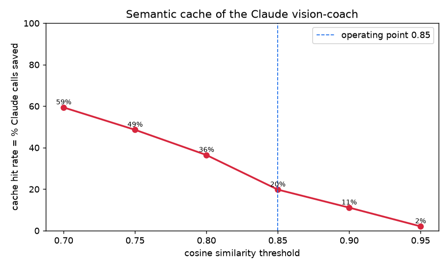

One live Redis at localhost:6379 is the classifier, the agent memory,
the LLM cache, and the player profile store. No model server. No GPU. No separate vector DB.
Single-note audio features → StandardScaler → L2-norm (full 28-dim), indexed in a RediSearch HNSW vector index. We classify held-out notes with a distance-weighted k-NN vote (k=13) executed inside Redis. Preprocessing is fit on train folds only; stratified 5-fold (one player, so not LOPO). Held-out accuracy 62.0% vs base rate 33.3% vs an LDA fit on the same folds (66.9%) — a parametric model gets no edge, and the Redis k-NN needs no model server.

Per-class recall: clean: 71% buzz: 39% muted: 76% Latency p50 0.75 ms · p95 2.32 ms · p99 2.66 ms.
Every mistake embeds to a vector. On a new mistake we vector-search Redis for a semantically-similar past mistake whose coaching text is cached, and serve it instead of calling Claude. At cosine ≥ 0.85 over 288 streamed mistakes: 20% hit rate = 20% of Claude calls eliminated (231 real calls instead of 288). Cold-start misses are counted.

| class | string | cosine | served from | coaching served |
|---|---|---|---|---|
| muted | high-e | 0.856 | CACHE | The A string is buzzing (low position). Press just behind the fret wire, not on top of it,… |
| muted | G | 0.874 | CACHE | Your G string came out muted in the high position. A neighbouring finger is damping it -- … |
| muted | low-E | 0.907 | CACHE | Your low-E string came out muted in the low position. A neighbouring finger is damping it … |
| muted | D | 0.861 | CACHE | Your D string came out muted in the low position. A neighbouring finger is damping it -- a… |
| muted | low-E | 0.909 | CACHE | The B string is buzzing (low position). Press just behind the fret wire, not on top of it,… |
| muted | G | 0.866 | CACHE | Your G string came out muted in the low position. A neighbouring finger is damping it -- a… |
This is the canonical Redis-AI pattern: Redis as real-time context retrieval for an
LLM agent. Each HIT is a sub-ms vector lookup; each MISS is a real messages.create().
| neighbour string | count (of 45) |
|---|---|
| A | 12 |
| D | 11 |
| low-E | 8 |
| B | 6 |
| G | 6 |
| high-e | 2 |
JSON.SET tactus:profile:aditya — coach summary:
Hardest-to-read string: A (held-out classifier accuracy 54% -- this player's notes there are the least separable). Most common fault overall: muted:low-E (24x). (Per-string error rate is collection-balanced by design, so weakness is ranked by classifier separability.)
| string | n | held-out classifier acc | muted | buzz |
|---|---|---|---|---|
| high-e | 72 | 65% | 33% | 33% |
| B | 72 | 64% | 33% | 33% |
| G | 72 | 64% | 33% | 33% |
| D | 72 | 61% | 33% | 33% |
| A | 72 | 54% | 33% | 33% |
| low-E | 72 | 64% | 33% | 33% |
Per-string class rate is collection-balanced (24/24/24 by design), so weakness is ranked by held-out classifier accuracy — the string whose notes are least separable. Recurring-mistake histogram (top 5):
| pattern | count |
|---|---|
| muted:low-E | 24 |
| buzz:low-E | 24 |
| buzz:A | 24 |
| muted:A | 24 |
| muted:D | 24 |
7 TimeSeries keys under tactus:ts:aditya:,
6 weekly sessions, anchored to the real per-string clean rate.
Overall clean rate climbs 44% →
94%.
Generated by software/ai/analysis/exp/redis_engine.py against live Redis.